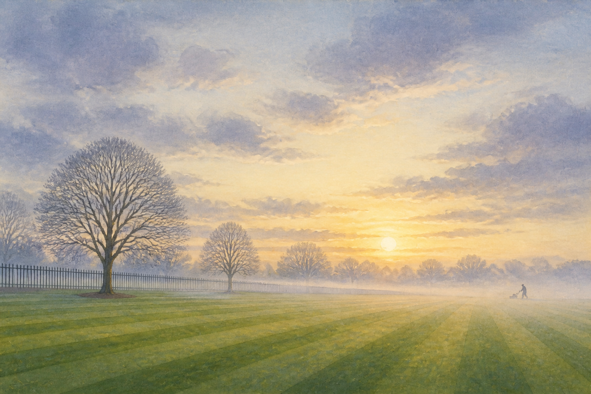
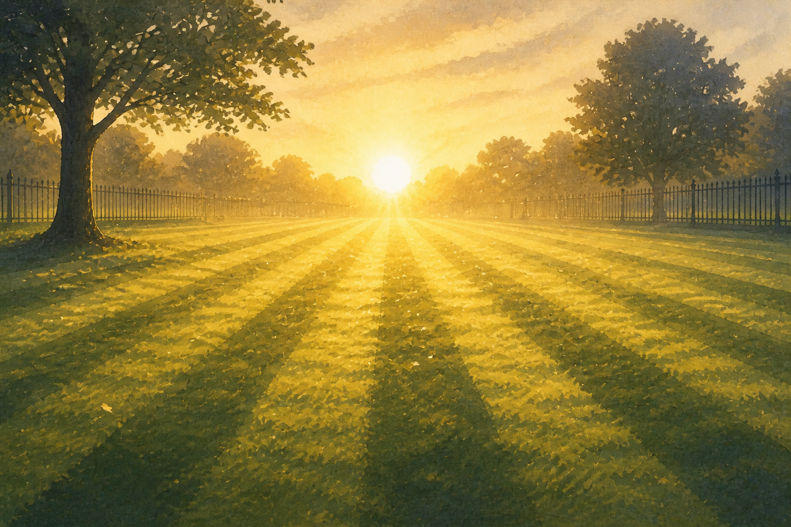
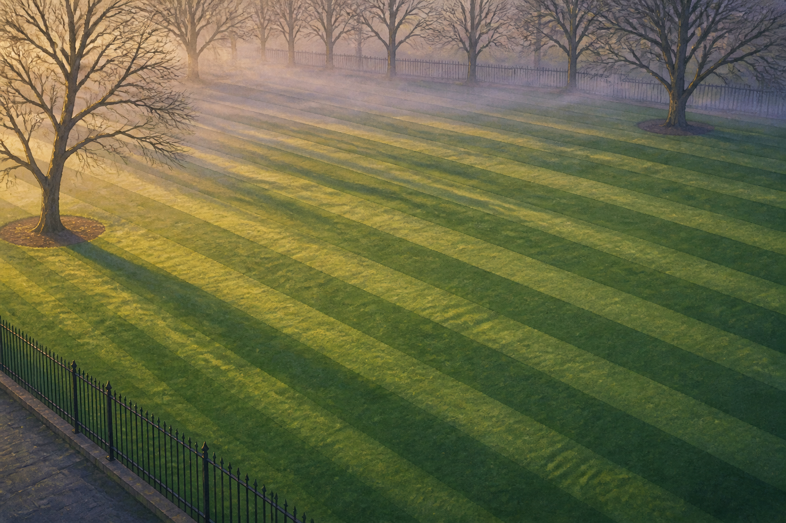
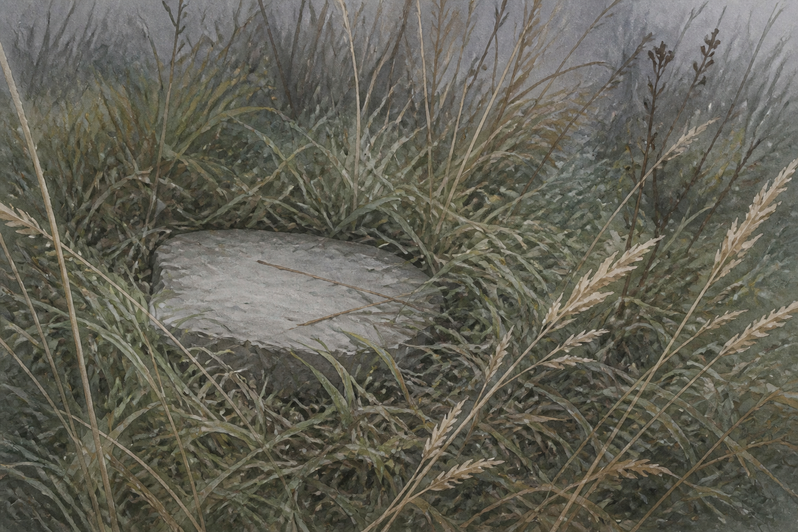
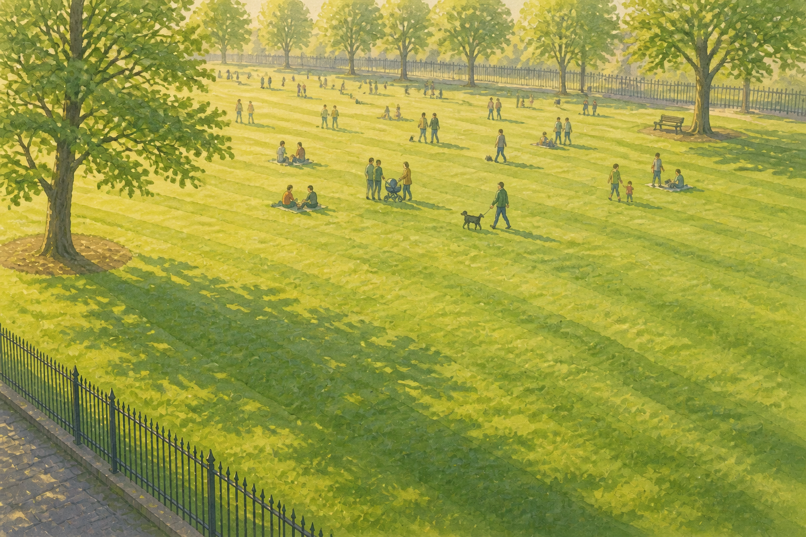
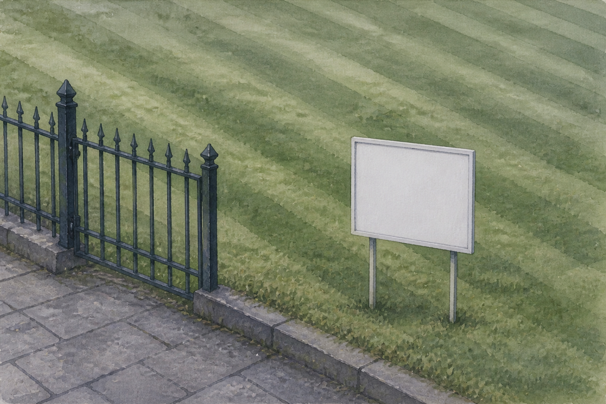
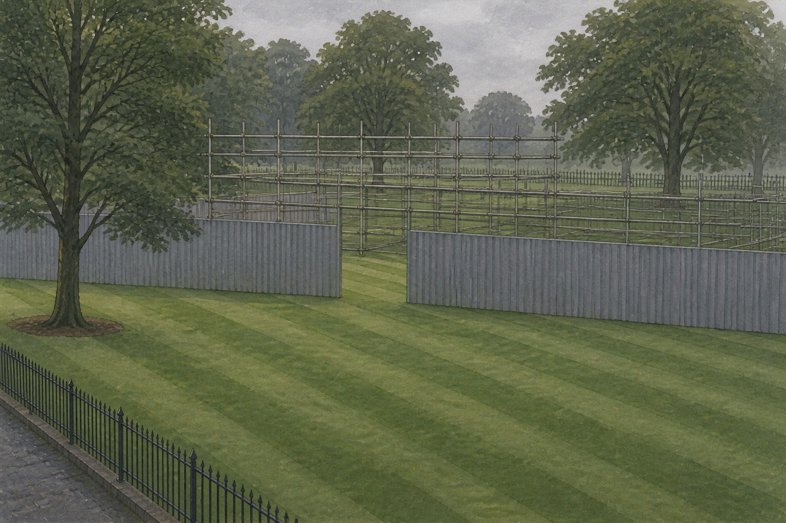
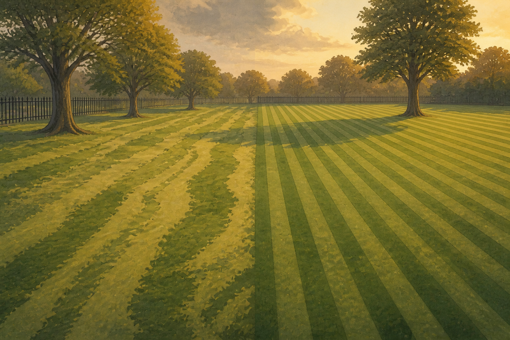
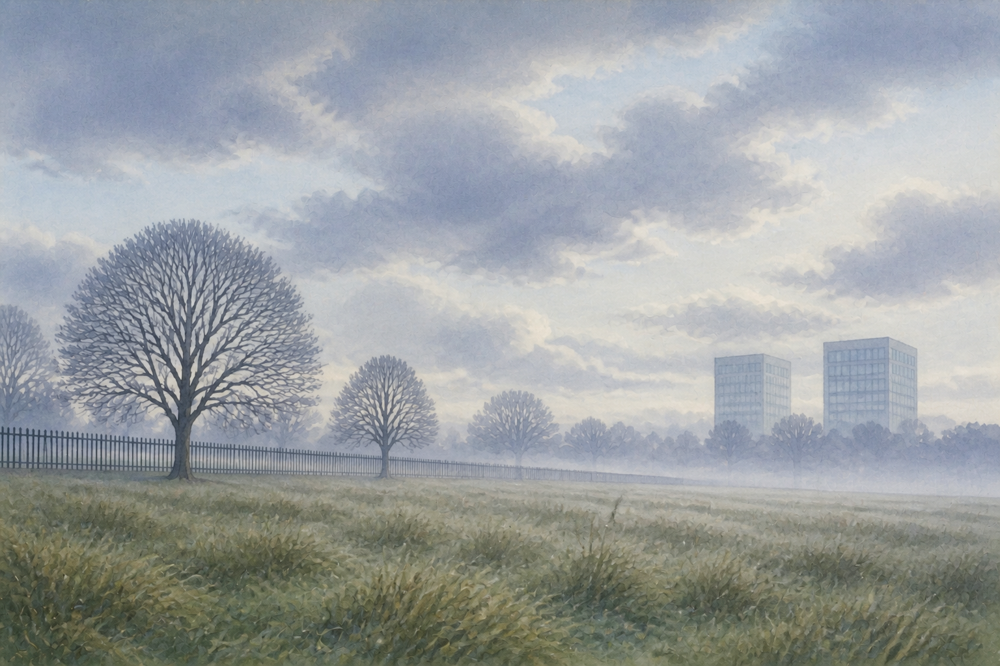
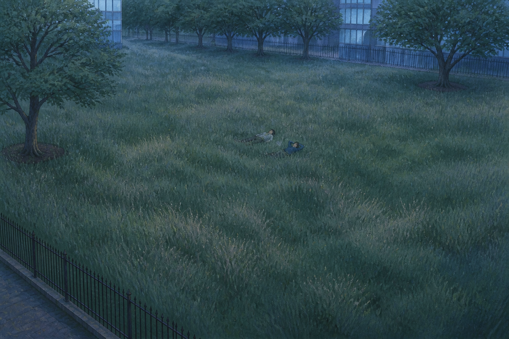

Dawn, the parkthe ritual
The lawn at first light, mist still in the low field. Stripes are already cut — someone has been here before us. She is at the far end with the mower, small in frame, and we join her mid-task rather than watching her arrive.
- CAMERA
- Very slow push in, 4% over the shot. Nothing else.
- LIGHT
- Low sun just over the horizon, behind mist. Warm rim on the grass.
- MOTION
- Mist drifting, grass moving, her small walking loop.
- SOUND
- Dawn birds. The mower starts up, distant.
- ENDS ON
- Her reaching the end of a stripe and turning.
- ART
- Plate P1 — new. Also the base for beat 9.
- IN
- Fade up from black, 3 s.

Pushingthe joy, not the drudgery
Closer, and backlit. Clippings lift off the blade and hang in the low sun. This shot exists so the film is not about endurance — it is about something she is genuinely good at and genuinely loves.
- CAMERA
- Locked off. Slow drift right, 2%.
- LIGHT
- Sun behind her. Her face is in shadow and stays there.
- MOTION
- Her walking loop; clippings drifting; the slow sway of the machine.
- SOUND
- The cut of the machine, close now. Steady, rhythmic, almost musical.
- ENDS ON
- A stripe completed behind her.
- ART
- Plate P2 — new. Closest we get to her face.
- IN
- Dissolve 2 s, matching the stripe direction.

Stripesfall in love with the pattern
High and near-empty. Nothing but perfect mown stripes and no person at all. We make the audience love this image before we tell them what it costs — which is why beat 11 can come back to it and mean something else entirely.
- CAMERA
- Very slow rise, as if drifting up a balloon, 3%.
- LIGHT
- Early light raking across, so the stripes read as relief, not paint.
- MOTION
- Grass moving. Nothing else. The mower is off-screen and audible.
- SOUND
- The machine, off-axis. Still birds under it.
- ENDS ON
- The frame full of stripes.
- ART
- Plate P3 — new. Matched pair with P11.
- IN
- Dissolve 2 s.

The north bankwhy she is here
Kneeling in long grass beside a flat stone, worn pale and unmown, out of the stripes. Both hands opening a small tin. The wind takes it. We do not see her face and we do not need to — the posture is a person letting go of something and not watching where it goes.
- CAMERA
- Very slow push, 3%. Held longer than any other shot.
- LIGHT
- Cooler than the rest of Act one. She is out of the sun, in the shade of the bank.
- MOTION
- Long grass moving. Her hands opening, once. The pale drift going.
- SOUND
- Wind in long grass. Birds. No mower — she has stopped for this.
- ENDS ON
- The grass closing over the place where it was.
- ART
- Plate P4 — new. The only genuinely intimate frame in the film.
- IN
- Dissolve 2.5 s, out of the stripes into uncut grass.
Production note. We asked for this to be unmistakable, and it is — but by act, not by lettering. Image models cannot paint a legible name on a stone. The stone is weathered and pale; she opens the tin; the wind takes it. The card in beat 10 supplies the actual words, which is stronger anyway.

Sundaythe work is not pointless
The park fills. Dogs, prams, a man on the bench. A dog comes over to sniff the mower and she lets it, and stops for a second. This beat is the film's only evidence that forty years of invisible work is landing somewhere — and we give it to strangers, not to her.
- CAMERA
- Slow pan left to right, 5%, the only real pan in the film.
- LIGHT
- Full morning. The warmest, brightest frame we allow ourselves.
- MOTION
- People crossing. The dog. Grass. Everything at once, gently.
- SOUND
- The busiest the film gets. Greetings, dogs, a gate, children.
- ENDS ON
- Her starting off again.
- ART
- Plate P5 — new. The hardest plate: many small figures.
- IN
- Dissolve 2 s, out of the empty stripes into the crowd.
Production note. Keep the figures small and slightly soft. A crowd of legible generated people is the single most likely thing in this film to look wrong, and the shot works because they are anonymous.

For salethe turn
A board pushed into the grass by the gate. She has stopped and is reading it, and the mower is idling. Nothing dramatic happens. The turn in this film is a woman standing still.
- CAMERA
- Locked off. The stillness is the point.
- LIGHT
- Same light as beat 5. Continuity is deliberate — the day has not changed, the world has.
- MOTION
- Her reading. Grass. The idle running. Nothing else in the frame moves.
- SOUND
- The birds stop. The mower idles under nothing. This is the only cut in the film's sound.
- ENDS ON
- Her starting to walk back to the mower.
- ART
- Plate P6 — new.
- IN
- Dissolve 2 s.

The hoardingone flicker, then gentle
Scaffolding and hoarding around the park. The gate is a gap in a construction fence now, and she mows through it. She is the only person here still doing the work properly, and she is trespassing to do it.
Her jaw sets and her hand grips the handle a beat too long. Then it lets go. That is the entire performance — we get one flicker of real anger and she chooses, deliberately, to stay gentle. It is the bravest thing anyone does in this film.
- CAMERA
- Slow drift, 3%, following her through the gap.
- LIGHT
- Flat and cool under the hoarding. First time the film loses warmth.
- MOTION
- Her walking loop. The grip: knuckles tighten once, release. Nothing else.
- SOUND
- Construction somewhere off. No birds.
- ENDS ON
- The grip released.
- ART
- Plate P7 — new. May need a second painting for the released hand.
- IN
- Dissolve 2 s.

Two patternsshe chooses
Their stripes are already in the grass behind her: quicker, cheaper, and slightly crooked. She looks at them for a long moment. Then she mows her own last line by hand, straight, the way she always has. She is not making a point. She just cannot do it any other way.
- CAMERA
- Locked off. Her looking is the whole cut; we do not move while she decides.
- LIGHT
- Evening starting. Warmer than beat 7, but dimming.
- MOTION
- Her walking loop on the hand mower. Both patterns still. Nothing clever.
- SOUND
- Her hand mower. Everything else quiet.
- ENDS ON
- The line finished.
- ART
- Plate P8 — new. Needs both stripe patterns correct in one image.
- IN
- Dissolve 2 s.
Production note. This is the hardest plate in the film and the riskiest prompt. Two mowing patterns with different geometry in one coherent painting. If it fails, we cheat it: paint them as two plates and composite the crooked ones in behind her.

Out of framemirror of beat 1
The exact camera position of beat 1. The mower is parked and not running. The grass is long. Above the trees, two buildings that were not there in beat 1. She walks out of frame and the camera does not follow her.
- CAMERA
- Identical to beat 1, then nothing. No push. It is a held frame and we let it be held.
- LIGHT
- Later in the day than beat 1. Same sun, further along.
- MOTION
- Her leaving frame. Long grass moving.
- SOUND
- Mower off. Wind. One bird, briefly, then nothing.
- ENDS ON
- The empty frame. Hold 3 s past her exit.
- ART
- Plate P9 — variant of P1, generated as a pair.
- IN
- Dissolve 2.5 s.
The cardthe only words in the film
Black. One line, centred, held for eight full seconds: The north bank, where we scattered her ashes.
It is the only hard cut in the film and it is placed to re-frame the next twenty-six seconds. When you come out of black onto the long grass, you will not be looking at a lawn. You will be looking at where she is.
- TYPE
- Georgia italic, small, centred, on black. No title card, no opening titles.
- MOTION
- None.
- SOUND
- Total silence for 5 s, then wind returning underneath the last of the card.
- ART
- None. Text only.
- IN
- Hard cut. The only one.
Open. The word we is the one thing in this film I haven't resolved. Her voice would be I; the park's voice would be we; a narrator's would be they. We is the most interesting of the three and it is genuinely ambiguous, but you should know it's a choice before we bake it into a plate.

Long grassmirror of beat 3 · the resolution
The same high angle as beat 3, and the stripes are gone — a year of not cutting, the grass up to their chests. Two strangers come and lie down in it. One of them puts an arm behind their head. Then we hold on the grass moving for a very long time, and that is the end.
They are lying in the north bank. They don't know. She isn't there and will never be.
- CAMERA
- Locked off, then the slowest drift in the film — 2% over 20 seconds. Barely perceptible, which is correct.
- LIGHT
- Evening. Cooler than anything else. Two buildings at the edges, deliberately cropped so we never see them properly.
- MOTION
- The grass moving. The one arm going behind a head, once, early. Nothing else for the last 20 s.
- SOUND
- City. Traffic, distant voices, glass. No birds. No mower. No music.
- ENDS ON
- Grass. Hold, then cut to black.
- ART
- Plate P11 — new. Matched pair with P3.
- IN
- Dissolve 3 s out of black — the longest in the film.
Production note. Keep both strangers small and anonymous — the same insurance as beat 5. The moment a generated stranger gets a legible face, the shot stops working.